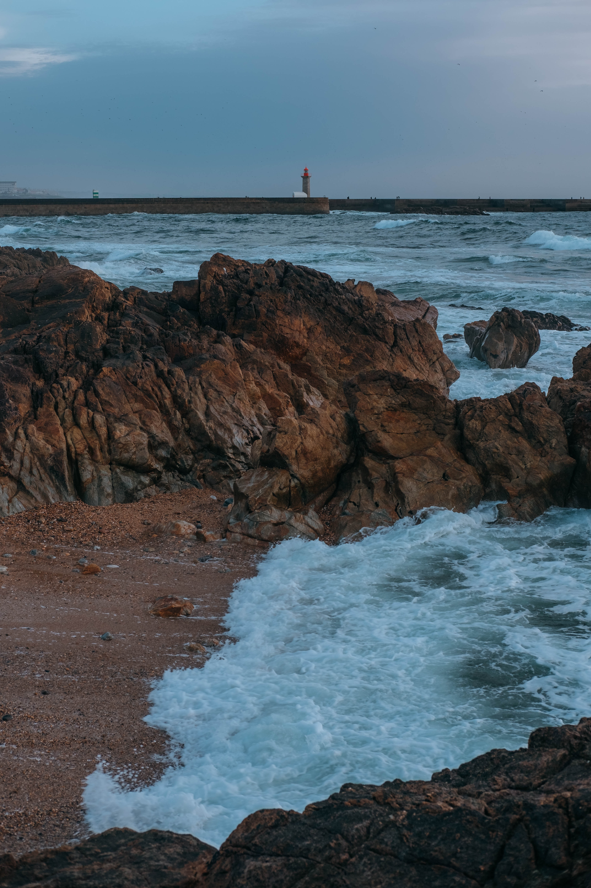

Pelicula Comica Estadounidense.
Escrita por Marc Lawrence, Katie Ford y Caryn Lucas, y dirigida por Donald Petrie.
Estrenada en el año 2000 y distribuida por Warner Bros., concretamente el 22 de diciembre de dicho año en Estados Unidos y los días 6, 20, 26 y 27 de abril de 2001 en España, México, Venezuela y Colombia, respectivamente.

Película estadounidense de ciencia ficción y catástrofes de 2004.
Basada en el libro The Coming Global Superstorm de Art Bell y Whitley Strieber y relata los efectos climáticos catastróficos tras la interrupción de la circulación del Océano Atlántico Norte en una serie de eventos climáticos extremos que marcan el comienzo del enfriamiento global y conducen a una nueva era de hielo.
Estrenada en la Ciudad de México el 17 de mayo de 2004 y en los Estados Unidos el 28 de mayo de 2004.

Tetralogía de novelas de ciencia ficción y aventura para jóvenes.
Escrita por Suzanne Collins.
La serie se compone hasta ahora de cuatro obras: Los juegos del hambre, En llamas, Sinsajo parte 1 y parte 2.
Estrenadas en los años 2008, 2009, 2010 y 2020.
HTML
Uso de la Etiqueta table
Clase Programación III
Bodas de Sangre
Bodas de sangre es una tragedia en verso y en prosa del escritor español Federico García Lorca escrita en el año 1931.Se estrenó el 8 de marzo de 1933 en el Teatro Beatriz de Madrid por la Compañía de Josefina Díaz y Manuel Collado y escenografía de Santiago Ontañón, que en 1938 fue llevada al cine por Edmundo Guibourg, protagonizada por la musa lorquiana Margarita Xirgu.
Cuentos de Barro
Es un libro de relatos del autor salvadoreño Salvador Salazar Arrué más conocido como Salarrué (1899-1975). Publicado por primera vez en 1933 en El Salvador por la editorial La Montaña, el volumen recoge treinta y tres cuentos, algunos de los cuales el autor escribió para distintos periódicos durante los últimos años de la década de los veinte y principio de los treinta.En la primera edición de la obra se incluían grabados del pintor José Mejía Vides; estos han seguido apareciendo en las ediciones posteriores.
Marianela
Marianela, la niña huérfana, vive excluida de la sociedad y es tratada
como un animal por la familia con la que vive. Pasa la mayor parte del
tiempo con Pablo Penáguilas, quien no la juzga por su apariencia,
ya que es ciego. De ahí nace una conexión muy
íntima entre ambos personajes.
Teodoro Golfín, médico de mundo que llega a las minas para visitar a su hermano,
se ofrece para intentar devolver la vista a Pablo. La prima de Pablo, Florentina,
también visita las minas. Marianela le tiene celos debido a su
belleza, su elegancia y su generosidad. Aun así, Pablo le asegura a Marianela
que los dos vivirán juntos en el futuro, puesto que son almas gemelas.
Después de varias vicisitudes, Golfín otorga a Pablo el don de la
vista y con esto la esperanza de conocer un mundo lleno de maravillas.
Pero una vez recuperada la visión, Pablo se enamora de Florentina, pensando que es Marianela;
pero al darse cuenta de que no es ella, decide iniciar una relación con Florentina.